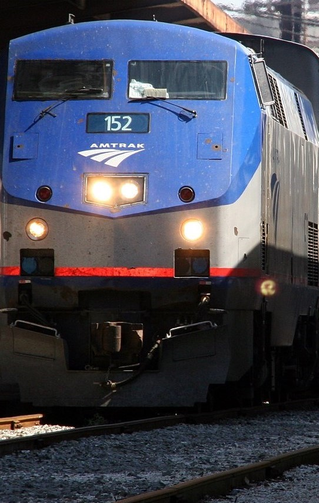
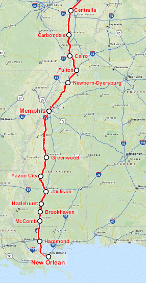

The City of New Orleans is an interstate American train that is run by Amtrak. It runs from Chicago to New Orleans, succeeding the Panama Limited run by the Illinois Central Railroad. It was opened on April 27, 1947 and it received an overnight schedule in 1971. The train runs down the Mississippi river, travelling 934 miles. Its route has been changed several times and but it currently has 17 stops. The route was made famous when Steve Goodman wrote the folk song 'City of New Orleans' in 1970 and Arlo Guthrie recorded it in 1972. After Hurricane Katrina, Arlo Guthrie started a fundraiser while aboard the City of New Orleans to raise money for the recovery. Though the train route is one of the most iconic in America, it has nonetheless suffered during the Covid-19 pandemic and service has seen many cuts.
You're the conductor of the City of New Orleans. On your way down to New Orleans, your train stops due to engineering issues in the dense swamps of Mississippi. To make it even worse, the swamp is infested with poisonous water moccasins. Perform your duty by tackling the water moccasins before they can get to your train.
Attributions
https://pixabay.com/
https://en.wikipedia.org/wiki/City_of_New_Orleans_(train)#/media/File:FEMA_-_20680_-_Photograph_by_Robert_Kaufmann_taken_on_10-10-2005_in_Louisiana.jpg By Robert Kaufmann - This image is from the FEMA Photo Library., Public Domain, https://commons.wikimedia.org/w/index.php?curid=8078572
https://en.wikipedia.org/wiki/City_of_New_Orleans_(train)#/media/File:Amtrak_City_of_New_Orleans.png By http://sharemap.org/public/Amtrak_City_of_New_OrleansGeospatial data sources:Open Street Map Data (ODbL) - http://www.openstreetmap.org/copyrightNORTAD - http://www.bts.gov/publications/north_american_transportation_atlas_data/Natural Earth - http://www.naturalearthdata.com/, CC BY-SA 3.0, https://commons.wikimedia.org/w/index.php?curid=26959681
https://en.wikipedia.org/wiki/City_of_New_Orleans_(train)
https://en.wikipedia.org/wiki/City_of_New_Orleans_(train)#/media/File:Kankakee_IC_Aug_1964_3-03.jpg By Lawrence and David Barera - Flickr: Kankakee IC Aug 1964 3-3, CC BY-SA 2.0, https://commons.wikimedia.org/w/index.php?curid=33184438
https://en.wikipedia.org/wiki/Amtrak#/media/File:Amtrak_network_map_2016.png By User:Pi.1415926535 - PNG render of File:Amtrak network map 2016.svg for article use, CC BY-SA 4.0, https://commons.wikimedia.org/w/index.php?curid=50411175
https://en.wikipedia.org/wiki/Amtrak#/media/File:Amtrak_California_Zephyr_Engines_1_and_56_Eastbound_at_Grand_Junction_-_img1.jpg By Ebgundy - Own work, CC BY-SA 3.0, https://commons.wikimedia.org/w/index.php?curid=26365476
https://en.wikipedia.org/wiki/New_Orleans#/media/File:New_Orleans_skyline-02.jpg By thepipe26 - Flickr: new orleans skyline, CC BY 2.0, https://commons.wikimedia.org/w/index.php?curid=21875670
https://www.youtube.com/channel/UC7ePce7fCqm4oGYy_wOeYIQ
https://en.wikipedia.org/wiki/Agkistrodon_piscivorus#/media/File:Agkistrodon_piscivorus_piscivorus_CDC.png By CDC/ Edward J. Wozniak D.V.M., Ph.D., John Willson at the University of Georgia, at the Savannah River Ecology Laboratory (SREL) - This media comes from the Centers for Disease Control and Prevention's Public Health Image Library (PHIL), with identification number #8125.Note: Not all PHIL images are public domain; be sure to check copyright status and credit authors and content providers.العربية | Deutsch | English | македонски | slovenščina | +/−I downloaded the high-resolution TIFF from the website and re-saved it in the PNG format (compression level 9) using GIMP. This reduced the file size by about half while resulting in no loss of visual information., Public Domain, https://commons.wikimedia.org/w/index.php?curid=2084085
https://en.wikipedia.org/wiki/Southwest_Chief#/media/File:Southwest_Chief_at_Devil's_Throne,_New_Mexico.jpg By Christopher Quinlan - Own work, CC BY-SA 4.0, https://commons.wikimedia.org/w/index.php?curid=72735496
https://freesound.org/people/JustPlainPhillip/sounds/132712/
https://freesound.org/people/Topschool/sounds/442604/
https://freesound.org/people/EVRetro/sounds/533034/